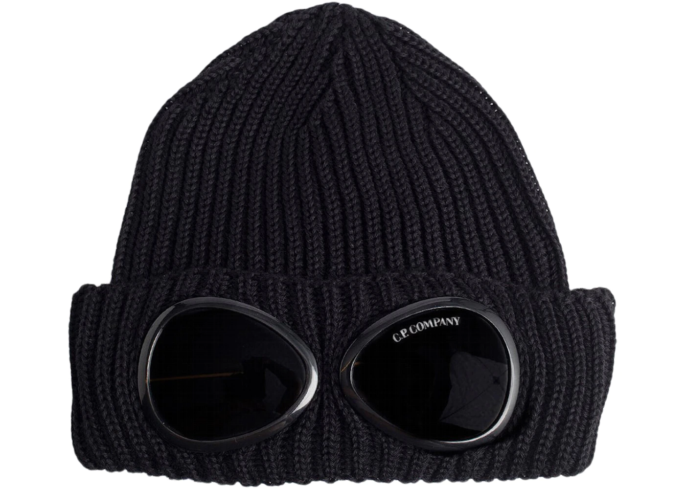
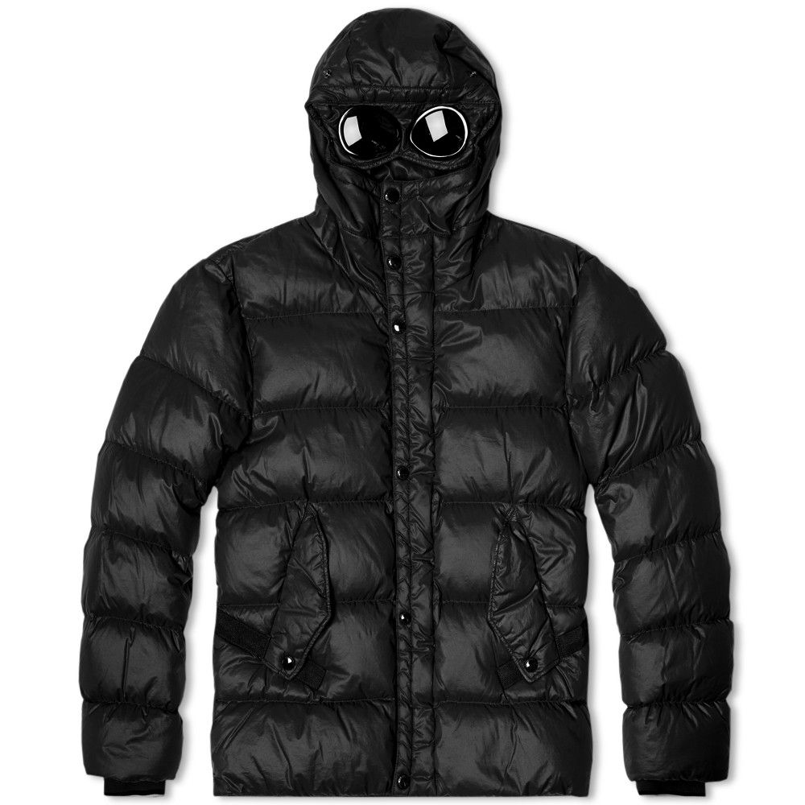

C.P. Company clothing design often conducts research and design into military uniforms and work suits. It became known for its functional, military-inspired outerwear and the use of innovative fabrics, processing techniques and design. Its "Mille Miglia jacket" (also known as "Goggle jacket", 1988), features two clear lenses on the hood — the "goggle" — and one on the wrist, for the wristwatch. Since 1975 C.P. Company has produced over 40,000 garments. Today, the brand has generated a large following within the dutch 'football hooligan' subculture. C.P. Company continues to deliver modern field jackets, soft shell goggle jackets, lens sleeve sweatshirts, and more. Something also important to note about C.P. is that it is the grand father brand to stone island previoulsy mention in a prvious archive entry.

